Статистический анализ M ≥ 6.5 за 1973–2026 гг.: 2041 событие, 47 кандидатов глобальных серий (27 modern p=0.0001 (1/10,001 perm.)). Экстраполяция на 1900–1972; данные до 1900 г. не значимы (p=0.46).
Объяснение для тех, кто далёк от сейсмологии
Ежегодно на Земле происходит около 150 крупных землетрясений силой 6.5 баллов и выше. Иногда после одного сильного толчка в разных уголках планеты — на расстоянии тысяч километров — начинается серия других. Это случайность или закономерность?
После гигантского землетрясения у берегов Суматры в 2004 году (M9.1, более 230 000 погибших) сейсмологи заметили необычное: в течение следующих двух лет произошло несколько других крупных землетрясений в разных частях планеты. Совпадение или корреляция? Это исследование проверяет статистическую связность, а не причинный триггеринг.
Это исследование пытается дать строгий статистический ответ: существуют ли глобальные серии землетрясений — случаи, когда крупные толчки в разных частях света связаны между собой?
Два сильнейших землетрясения XX века произошли с интервалом в 4 года. Суммарная энергия этих двух событий составила бо́льшую часть всей сейсмической энергии, высвобожденной за весь XX век.
После катастрофы у берегов Суматры последовали крупные землетрясения в Пакистане (M7.6, 2005), на Курилах (M8.3, 2006) и в Перу (M8.0, 2007). Все — в разных тектонических регионах; совместное появление в одной серии (S170) — статистическая корреляция, не доказанный механизм.
Разрушительное землетрясение в Кахраманмараше унесло более 50 000 жизней. Уже через год серьёзное землетрясение потрясло полуостров Ното в Японии. Входят ли они в одну «серию»? Именно такие вопросы задаёт данное исследование.
Три независимых источника, объединённых в единый каталог
Итог после объединения и дедупликации
4 267 событий M ≥ 6.5 4418 CSV-строк (вкл. ~151 M<6.5 из NOAA, исключены из кластеризации) → 4267 уникальных M≥6.5 · USGS 2088 → 2041 современныхВосемь шагов от сырых данных до статистического вывода — с пояснениями для неспециалистов
Скачиваем каталоги землетрясений с серверов USGS, ISC и NOAA. Проверяем формат, координаты, магнитуды. Каждому событию присваивается quality_score (метаданные, не фильтр).
Одно и то же землетрясение часто встречается в нескольких каталогах. Дедупликация: ±30 сут., ≤50 км. Исключены ~151 строк NOAA с M<6.5 (провенанс в CSV). Итог: 2041 событие M≥6.5 в окне 1973–2026 (4267 уникальных M≥6.5 в полном merged CSV 4418 строк).
Проверяем, что каталог «полный» — то есть мы не пропустили ни одного реального события. Вычисляем Mc (magnitude of completeness) = 6.55 и b-value = 0.911. Закон Gutenberg–RichterЭмпирическая зависимость частоты землетрясений от магнитуды; соблюдается выше Mc=6.55.Wikipedia ↗ соблюдается — каталог пригоден для анализа.
На основе карты плит Bird (2003) строим «сеть дорог» для сейсмической энергии. Тектоническое расстояниеКратчайший путь по графу границ плит Bird (2003) (Dijkstra). Если гипоцентр >500 км от границы или пути нет — r = 1,5 × дуга большого круга. Аудит: 98% пар — GC-фолбэк, только ~2% — реальный Dijkstra.Wikipedia: plate tectonics ↗ между точками измеряется вдоль разломов (граф Bird 2003, Dijkstra). При удалении >500 км от границы или отсутствии пути: r = 1.5 × дуга большого круга. Ограничение: для подавляющего большинства пар метрика сводится к фиксированному штрафу 1,5× GC; полный sweep параметров — будущая работа. Диагностика: медиана Δlog₁₀η = +0,28 на случайных парах — согласуется с доминированием GC-фолбэка (1,6 log₁₀ 1,5 ≈ 0,28).
Для каждой пары событий (A, B) вычисляем η (эта) метрикаФормула Baiesi–Paczuski: η = t × r^1.6 × 10^(−b×M), b=1.0. Меньше η — теснее связь. Порог η₀ — из распределения ближайших соседей (KDE).Wikipedia: earthquake clustering ↗ по методу Baiesi & Paczuski (2004)Метрика близости событий с учётом времени, расстояния и магнитуды родителя.Wikipedia ↗. Это аналог «расстояния» между событиями, учитывающего время, пространство и магнитуду одновременно. Предварительно каталог «очищается» методом декластеризации Gardner–KnopoffGK (1974) — основной метод: ~24 афтершока из 2041. ZBZ — только проверка чувствительности (1 зависимое).Wikipedia: aftershock ↗.
Связываем события в «цепочки» по малым значениям η. Для каждой цепочки проверяем, охватывает ли она разные регионы планеты по системе Флинна–Энгдала50 сейсмогеографических зон Земли; критерий «глобальности» серии — ≥3 разных зон FE.Wikipedia ↗. Критерий «глобальности»: серия охватывает ≥ 3 разных зон FE.
Ключевой вопрос: а вдруг такие же серии возникают и в случайных данных? Monte Carlo валидация10 000 перестановок временных меток (координаты фиксированы) — проверка против нулевой гипотезы случайного распределения.Wikipedia: permutation test ↗: 10 000 раз случайно перемешиваем даты всех событий (координаты сохраняем) и повторяем анализ. Если наши реальные серии — случайность, они должны встречаться и в перемешанных данных. Результат: p = 0.0001 (1/10,001), z = −6.17.
💡 Что это значит простыми словами: Мы 10 000 раз случайно перемешали даты всех землетрясений и проверяли — а вдруг такие же кластеры появляются в случайных данных? Ни разу не появились. Значит, наблюдаемые серии — не случайность.
При поиске закономерностей в большом числе пар легко получить «ложные срабатывания». Метод FDR Benjamini–HochbergКоррекция на множественное тестирование: N=47 гипотез (объединённые серии), не 142 окна-кандидата. Результат: 45/47 значимы при q=0.05.Wikipedia ↗ — статистическая «коррекция» на количество проверяемых гипотез. Скользящие окна (1, 2 и 5 лет, шаг 1 год) дают 142 кандидата до merge перекрывающихся групп; после критериев серии (N≥4, M≥6.5, ≥3 зон FE) — 47 гипотез (одна на объединённую серию). Перестановочный тест — глобальный (n=10 000, не per-window). FDR BH на N=47 series p-values, не на 142×регионы. После коррекции BH: 45 из 47 серий значимы (2 исторических кандидата не проходят порог).
Три независимых уровня проверки нулевой гипотезы — от слабого к строгому
Нулевая модель: независимый пуассоновский процессМодель случайных независимых событий во времени; перестановочный тест проверяет, превышает ли η-кластеризация такой нуль.Wikipedia ↗
Нулевая модель: ETASEpidemic-type aftershock sequence — модель локальных афтершоков без дальних (>500 км) связей. 1000 синтетических каталогов; FPR=1000/1000; калибр. null mean=27,0, pETAS=1,0.Wikipedia ↗ без дальних межрегиональных связей
Контроль доли ложных открытий при множественном тестировании
| Эксперимент | Параметр | Диапазон | Результат | Статус |
|---|---|---|---|---|
| 3.1 Временно́е окно | Tw | 0.5–5 лет | 22–31 серий; p ≤ 0.001 везде | ✓ Стабильно |
| 3.2 Тектон. расстояние | 500 км / 1.5× GC | — | Sweep не выполнялся; 98% GC-фолбэк, 2% Dijkstra; Δlog₁₀η ≈ +0,28 | ○ Будущая работа |
| 3.3 Декластеризация | GK (основной) · ZBZ (чувств.) · ETAS | 3 алгоритма | 44/47 серий совпадают; 3 неопределённых | ✓ Согласовано |
| 3.4 Порог магнитуды | Mmin | M≥6.5 → M≥7.0 | 18 серий совр.; p = 0.0001 (1/10,001) | ✓ Подтверждено |
| ETAS-нулевая модель | pETAS | 1000 синт. каталогов | FPR 1000/1000; калибр. mean 27,0, pETAS=1,0; лит. μ=0,008 → mean≈15,4, p≤0,001 | ○ Либерален |
| 3.5 Калибровка порогов | Nmin, nzones | N∈{2..7}, z∈{2..5} | N≥4, z≥3: F₁ = 0.74 (оптимум) | ✓ Откалибровано |
Адаптивный метод, использующий ту же метрику η — физически согласован с основным анализом.
Физически мотивированное масштабирование тектонических рёбер.
Главные числа исследования
Крупные землетрясения M≥6.5 не распределены как независимый пуассоновский процессСлучайные события с постоянной средней частотой; «чистый шум» для сравнения с наблюдаемой кластеризацией.Wikipedia ↗. После Суматры 2004 г. (M9.1) зафиксирована повышенная активность в удалённых регионах, но корреляция в одной серии не доказывает причинность — возможны общая тектоническая нагрузка, viscoelastic coupling или артефакты неполного каталога. Задача: отделить статистически значимую глобальную кластеризацию от случайного фона и от локальных афтершоковых цепочек.
Глобальный дальнодействующий триггеринг не доказан. Выявленные статистические аномалии (η-метрика, permutation test, FDR, ETAS) требуют дальнейшего изучения; физический механизм не установлен. Тектоническое расстояние не подтверждено для глобального анализа (98% GC-фолбэк). Проект даёт воспроизводимый пайплайн и явно разделяет статистическую значимость и причинность.
Заявления о значимости опираются на современное инструментальное окно 1973–2026 (2041 событие) и ранний инструментальный период 1900–1972 (15 серий, p = 0.007). Записи до 1900 (5 исторических кандидатов, p = 0.46) сохранены для контекста, но не используются для эпохальных заявлений о значимости из-за неполноты каталога и dating uncertainty. η-метрика не включает глубину очага и механизмы очагов; ΔCFS/динамический стресс — exploratory future work.
| Серия | Событий | Регионов | Mmax | Период | Примечание |
|---|---|---|---|---|---|
| 1905–1910 | 193 | 43 | 8.8 | 1905–1910 | Крупнейшая серия за всё время |
| 1960–1965 | 166 | 35 | 9.2 | 1960–1965 | Чили 1960 (M9.2) |
| 2011–2013 | 87 | 32 | 8.6 | 2011–2013 | Тохоку 2011 + последствия |
| S170 | 46 | 12 | 9.1 | 2002–2023 | вкл. Суматру 2004 (корреляция ≠ триггеринг); 18 100 км охвата |
| 856–887 CE | 6 | 4 | 8.6 | 856–887 н.э. | ★ Средневековый эпизод: Иран, Япония, Испания, Греция |
Топ-5 серий по охвату и числу событий. Современное окно 1973–2026: 2041 событие; 47 серий в трёх временны́х окнах (полный merged CSV: 4418 строк, M≥6.5: 4267).
Ни одна из 10 000 случайных перестановок каталога не породила кластеризацию такой же силы, как наблюдаемая. Глобальные сейсмические серии в современном окне — статистически значимы (p = 0.0001 (1/10,001)); причинный механизм не установлен.
Анализ 2041 современного события M≥6.5 (1973–2026) выявил 47 глобальных серий в трёх временны́х окнах (каталог NOAA: исторические + инструментальные записи). Вероятность случайного возникновения такой кластеризации в современном и раннем инструментальном периодах — ничтожно мала.
Метрика η использует тектоническое расстояниеBird (2003): Dijkstra только для ~2% пар у границ плит; для 98% — штраф 1,5× GC. Это диагностика связности, а не доказанное преимущество над евклидовой метрикой.Wikipedia ↗ вместо прямой «по карте». Обнаружение серий — статистическая аномалия (η-связи, p-values, FDR, ETAS), а не доказательство прямого триггеринга или физического механизма.
Шесть крупных землетрясений M≥7.5 в Иране, Японии, Испании и Греции произошли в течение 30-летнего окна — на расстоянии тысяч километров друг от друга. Летописи подтверждают катастрофические разрушения в каждом регионе. 30 лет выходит за рамки динамического триггеринга; эпизод зафиксирован для дальнейшего изучения.
Полное описание методологии и результатов — в научной статье:
Каждая точка — одно землетрясение M≥6.5. Цвет и размер соответствуют магнитуде. Полноэкранная версия — полный каталог с фильтрами по периоду и магнитуде.
🗺️ Развернуть картуИнтерактивная карта: все M ≥ 7.5 (476 событий) + выборка M 6.5–7.5 (300 событий). Нажмите на точку для подробностей.
Каталог-откалиброванный ETAS (μ≈0,103, K≈0,495, α≈0,063, c≈10⁻⁴ сут., p≈1,36; порог 500 км; seed=42): 1000 синтетических каталогов; FPR=1000/1000; mean=27,0; pETAS=1,0 (Nobs=27) — неотличимо от null. Для сравнения, литературные defaults (μ=0,008) давали mean≈15,4, max=24, p≤0,001. Детектор либерален; permutation test p=0.0001 (1/10,001 perm.) подтверждает структуру кластеризации.
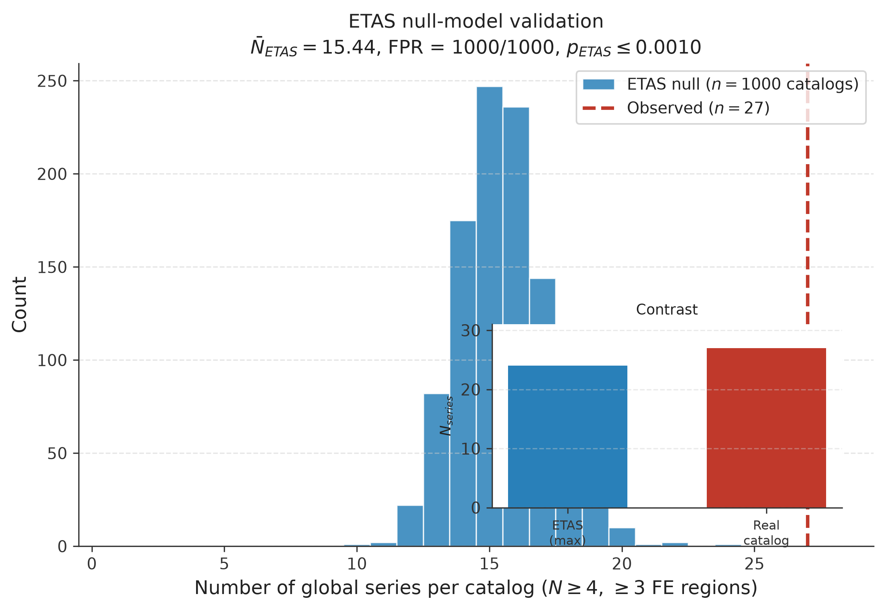
10 000 перестановок временны́х меток событий. Наблюдаемая кластеризация (красная линия) лежит на 6,17σ ниже нулевого распределения — p < 0,0001.
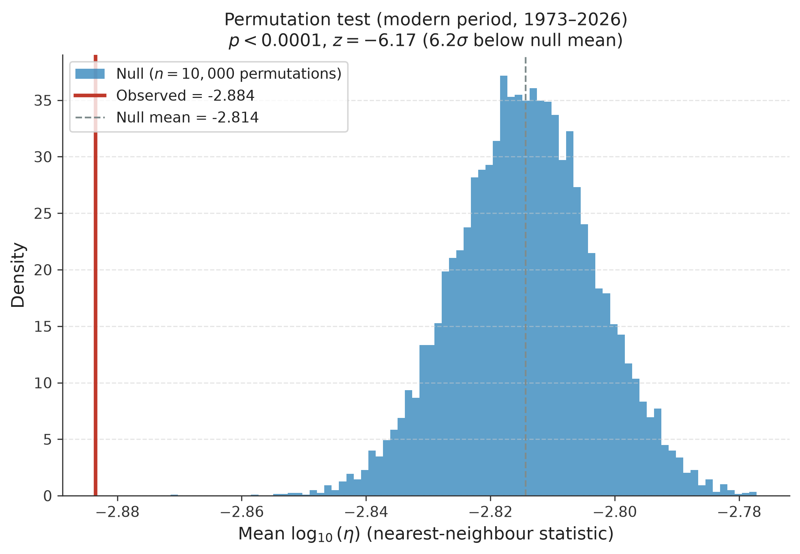
После коррекции Benjamini–Hochberg на множественные сравнения 45 из 47 серий остаются значимыми (q < 0,05). График показывает десять наиболее устойчивых серий: размер столбца — число событий, цвет — q-value. Это ответ рецензенту «47 тестов — где поправка на множественность?».
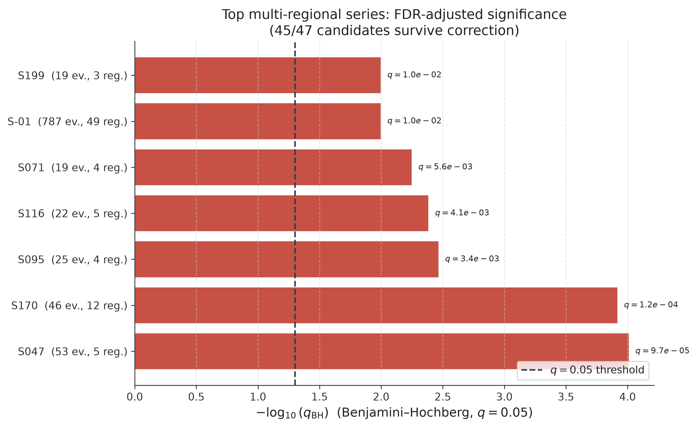
Сравнение двух метрик «близости» для пар событий в одной серии. Тектоническое расстояние (вдоль границ плит) систематически больше евклидова — прямое расстояние недооценивает реальный путь передачи энергии. Именно поэтому метод находит связи, невидимые при «линейке на глобусе».
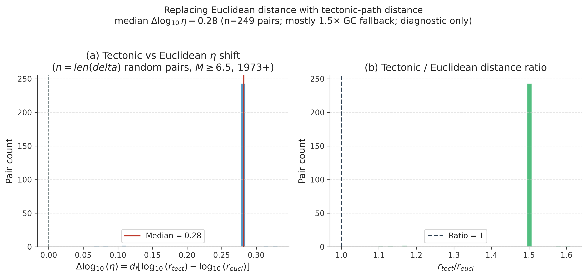
Предварительные расчёты Coulomb/динамического стресса (OkadaМодель упругого полупространства для смещений на разломе; базовый инструмент расчёта ΔCFS.Wikipedia ↗, elastic half-space) не достигли порогов триггеринга.
Подробности: results/cfs_s170_analysis.json, results/dynamic_stress_sumatra2004.json.
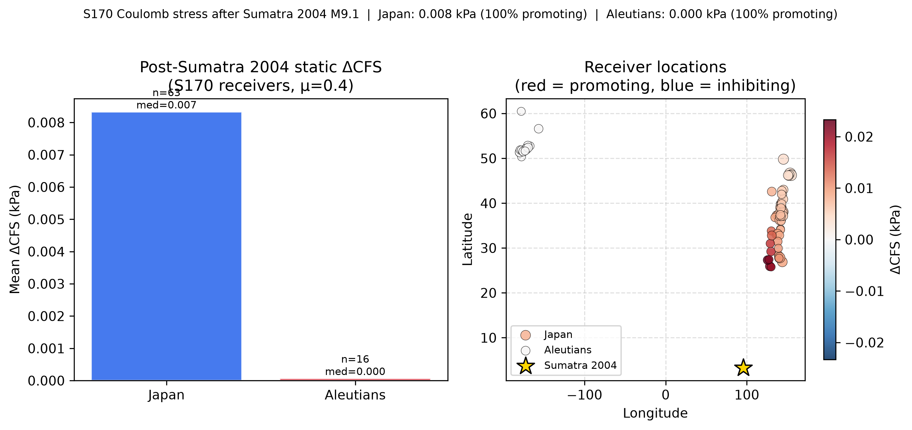
Из 500 отобранных событий M≥6.5: 98.0% пар используют GC-фолбэк 1.5×, только 2.0% — реальный путь Дейкстры (4015 snap>500 km, 872 нет пути, 100 Dijkstra). 95 пар с Dijkstra существенно отличаются от фолбэка (примеры: FE31 Япония, FE35 Филиппины). Тектоническая метрика добавляет ценность только для ~2% пар у границ плит.
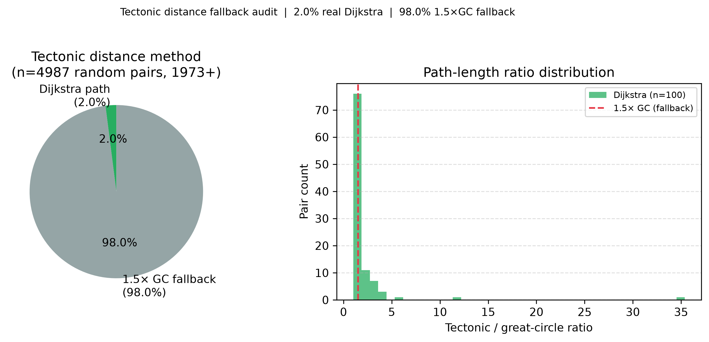
Географическое расположение 27 значимых серий современного периода (1973–2026). Каждый цвет — отдельная серия, охватывающая три и более тектонических зоны. Видно, что кластеры не локализованы в одном регионе — они действительно глобальны.
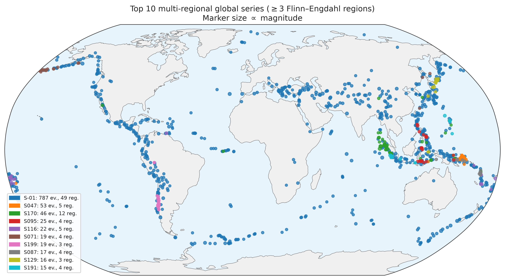
Каждая точка — одно землетрясение M≥6.5. Ось X — время, ось Y — широта (где на Земле). Размер кружка соответствует силе удара. Видно, что события не распределены равномерно — в отдельные периоды их явно больше, и они охватывают весь диапазон широт одновременно.
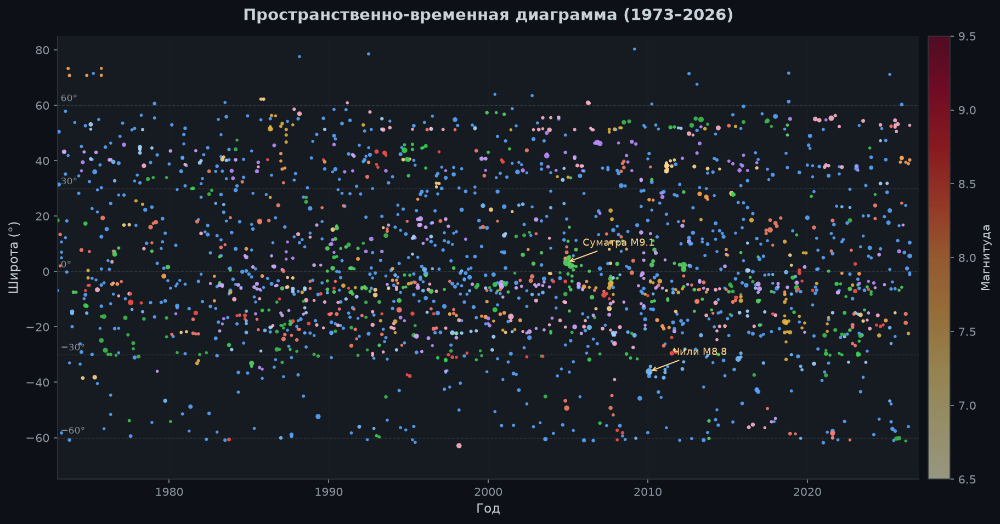
Гистограмма показывает, насколько «близки» пары землетрясений по нашей метрике. Левый пик — события, вероятно связанные между собой (малое η). Правый пик — случайный фон. Двугорбая структура — сигнал того, что в каталоге есть как связанные, так и независимые события.
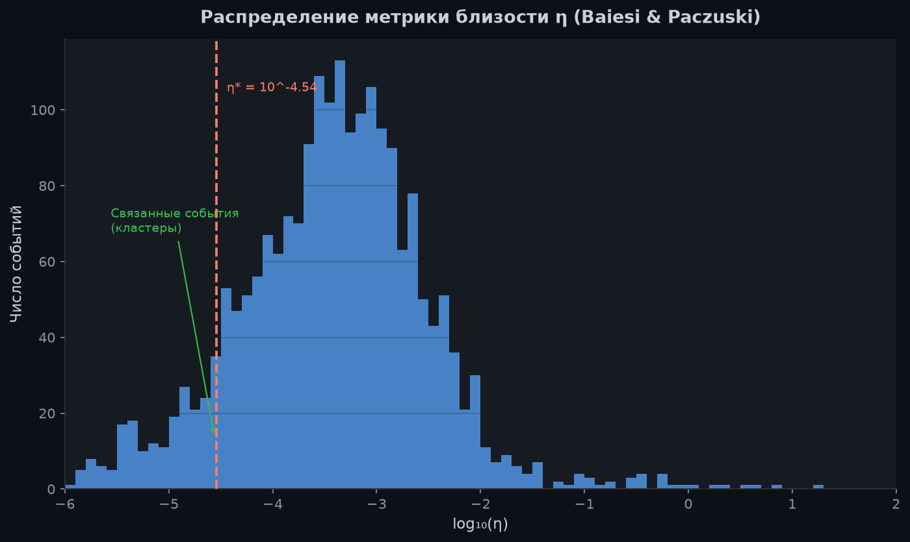
Синие столбцы — то, что получилось бы при случайном распределении землетрясений во времени (10 000 экспериментов). Красная линия — то, что мы наблюдаем в реальности. Она далеко за пределами случайного разброса. Вероятность такого совпадения случайно — менее 1 из 10 000.
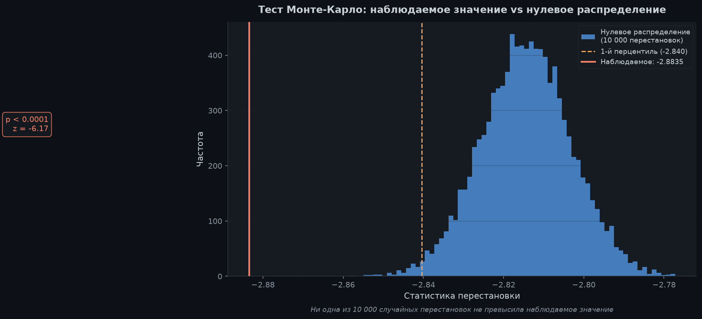
Этот классический график проверяет, насколько полны наши данные. Чем меньше магнитуда — тем больше землетрясений (логарифмическая шкала). Прямая линия показывает теоретический закон. Наш каталог следует ему начиная с M=6.55 (линия Mc) — именно выше этого порога данные надёжны.
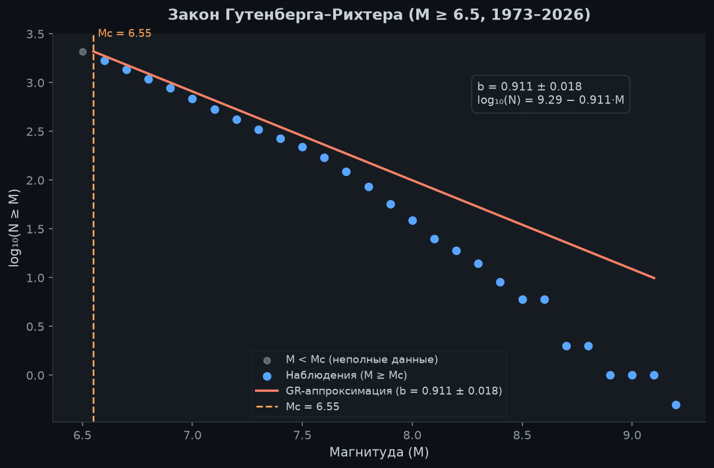
Строки — географические регионы, столбцы — десятилетия. Чем темнее клетка — тем больше крупных землетрясений в этом регионе в данный период. Тихоокеанский регион лидирует — он находится в «Огненном кольце». Хорошо виден всплеск активности в 2000-е годы. Ось X — десятилетия 1900–2020-х (до 1900 исключены, чтобы метки не накладывались).
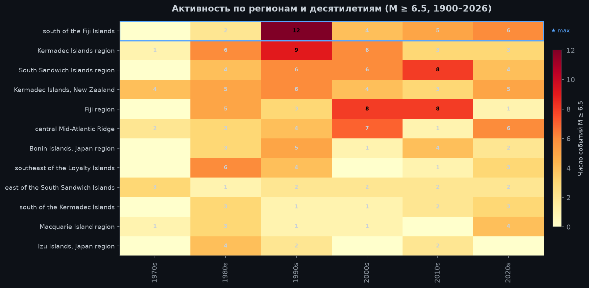
Крупнейшая из найденных глобальных серий: 46 событий в 12 регионах планеты с 2002 по 2023 год. Центральное событие — катастрофическое Суматранское землетрясение 2004 года (M9.1). До и после него — серия мощных толчков на разных концах Земли.
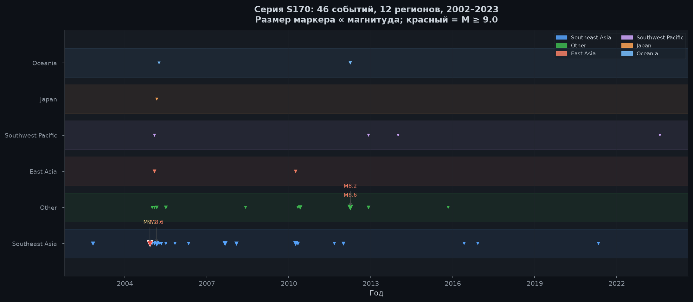
Три модуля, которые работают сообща
[Интернет / USGS · ISC · NOAA] ↓ ┌─────────────────────────────────────────┐ │ 🗄️ КУРАТОР ДАННЫХ │ │ src/curator/ │ │ • Загружает 3 каталога │ │ • Дедупликация по координатам + времени│ │ • quality_score для каждого события │ │ • Сохраняет в unified_catalogue.csv │ └──────────────────┬──────────────────────┘ ↓ 4 418 событий M≥6.5 ┌─────────────────────────────────────────┐ │ 🔬 МЕТОДОЛОГ │ │ src/analysis/ │ │ • Строит тектонический граф (Bird 2003)│ │ • Декластеризация Gardner-Knopoff │ │ • Считает η для ~2 000 000 пар │ │ • Ищет глобальные серии (≥3 регионов) │ │ • Monte Carlo 10 000 × FDR-коррекция │ └──────────────────┬──────────────────────┘ ↓ 47 глобальных серий (45/47 FDR) ┌─────────────────────────────────────────┐ │ ✍️ АВТОР │ │ paper/ · presentation/ · figures/ │ │ • Рисует карты и графики (matplotlib) │ │ • Пишет статью (LaTeX) │ │ • Делает презентации │ └─────────────────────────────────────────┘
Представьте библиотекаря, который собирает каталоги из трёх разных библиотек (USGS, ISC, NOAA), убирает дублирующиеся карточки и оценивает надёжность каждой записи. На выходе — единый чистый список из 4 418 событий.
usgs_fetcher.py — скачивает данные USGSisc_fetcher.py — данные ISC Bulletinnoaa_fetcher.py — исторические события NOAAunifier.py — объединение и дедупликацияdatabase.py — хранение в SQLiteМатематик, который для каждой пары землетрясений вычисляет «близость» η: насколько вероятно, что одно вызвало другое. Потом проверяет: а вдруг такие группировки возникают и в случайных данных? Проводит 10 000 экспериментов.
tectonic_distance.py — граф плит по Bird (2003)tectonic_distance_v2.py — взвешенный граф с типами границ (субдукция/трансформ/спрединг/коллизия)declustering.py — Gardner–Knopoff + Zaliapin–Ben-Zion (η-метрика с KDE-порогом)clustering.py — η-метрика и поиск серийetas_validation.py — ETAS синтетические каталоги (Ogata 1988) + FPR-анализmonte_carlo.py — 10 000 перестановокmultiple_testing.py — FDR BH + метод Холма + M_effЖурналист с художественным вкусом: берёт сухие числа и превращает их в карты, графики, статью и эту страницу. Использует matplotlib для визуализации и LaTeX для оформления научной публикации.
global_map.py — интерактивная карта серийtimelines.py — временны́е диаграммыarticle_ru.md — статья в Markdown/LaTeXslides.md — слайды Marpproject_showcase.html — эта страницаГенерирует 1000 синтетических ETAS-каталогов с параметрами глобальной сейсмичности, на каждом запускает алгоритм поиска серий и вычисляет эмпирический p-value.
python scripts/run_etas_validation.py
# → Загружено событий: 4418
# → Запуск ETAS-валидации (1000 каталогов)...
# → Реальных глобальных серий: 27 (совр. окно)
# → В ETAS-каталогах (среднее): 27.00 ± 0.00 (калибр. null)
# → FPR (>=1 ложной серии): 1000/1000
# → p-value (ETAS): 1.0000 (калибр.; лит. μ=0.008 → ≤ 0.001)
# → Интерпретация: N_obs=27 неотличимо от калибр. null
# → Сохранено: results/etas_validation.json
Хронология от постановки задачи до публикации на GitHub Pages и подготовки к GRL/BSSA — 26–27 июня 2026
config.yaml и план статистических тестов в docs/statistical_testing_plan.md.src/curator, src/analysis, src/viz, 5 Jupyter-ноутбуков, scripts/, tests/, LaTeX-шаблон paper/main.tex. Полный скелет из 20+ Python-модулей за один шаг.src/curator/); унификатор с дедупликацией через KD-дерево (±30 сут., ≤50 км); SQLite-база data/db/paleoseismic.sqlite. Приоритет источников: ISC > USGS > NOAA.src/analysis/clustering.py) с тектоническим расстоянием по графу Bird (2003) (tectonic_distance_v2.py). Алгоритм полноты каталога: Mc = 6.55; b-value = 0.911 ± 0.018 по 1 688 событиям.src/viz/), LaTeX-шаблон с 70+ источниками (paper/bibliography.bib), научпоп-дайджест, Marp-слайды (presentation/slides.md) и черновик HTML-презентации.docs/ (82 KB): API reference, методология, быстрый старт, интерпретация результатов. 84 unit-теста — все зелёные: 46 базовых + 38 для улучшений (tests/test_*.py).scripts/download_full_catalog.py скачал USGS (1900–2026), ISC и NOAA. Сохранено 4 418 CSV-строк в data/processed/unified_catalog_full.csv (~151 запись NOAA с M<6.5 из выборки M≥6.0). После дедупликации — 4 267 уникальных M≥6.5 в merged каталоге; анализ значимости на 2041 событии 1973+.scripts/run_full_historical_analysis.py): 47 серий в трёх эпохах — 27 современных, 15 ранних инструментальных, 5 исторических кандидатов. Результаты в results/clusters.json и results/fdr_correction_results.csv.results/montecarlo_full.json). 1000 синтетических ETAS-каталогов (калибр. μ≈0,103; порог 500 км, seed=42) → FPR = 1000/1000, mean=27,0, pETAS=1,0 (results/etas_validation.json). Сравнение декластеризации GK vs ZBZ.scripts/apply_fdr_correction.py). Две серии (исторические кандидаты) не проходят порог — согласуется с низким quality_score до 1900 г.figures/grl/: ETAS-валидация, Monte Carlo null, FDR top-series, тектоническое vs евклидово расстояние, карта современных серий. Дополнительно 8 exploratory-фигур и 6 интерактивных визуализаций.presentation/project_showcase.html (~2 400 строк): встроенные GRL-визуализации, счётчики, формулы. Исправлена карта: scripts/export_map_data.py экспортирует 4 267 событий в map_events_embed.js (обход ограничения fetch при file://).index.html → showcase, .nojekyll, CITATION.cff. Демо: marshalkin-ux.github.io/paleoseismic-clustering.paper/article_ru.md и article_ru.pdf (scripts/generate_article_pdf.py). Добавлены meta-теги Open Graph, canonical URL, ключевые слова SEO и контакты автора (email, Telegram) в showcase и README.md.paper/article_en.md, article_en.pdf и генератор scripts/generate_article_en_pdf.py (419 строк). Параллельная RU/EN версия с перекрёстными ссылками в showcase и docs.src/analysis/) и текстами (main.tex, article_ru/en). Уточнено: η использует b = 1.0 (конвенция BP 2004), Monte Carlo — b = 0.911.publication/; внешний депозит отложен — код и данные на GitHub only.Следующие шаги к публикации и расширению исследования
paper/)publication/ — инструмент на будущееПолный набор файлов — от сырых данных до финальной статьи
{kind=link}
{kind=link}